pgpilot
Tutorial webinar, 1 October 2026
Get started


Tutorial webinar, 1 October 2026
Part 1: Introduction
Part 1
What is pgpilot?
All in one app
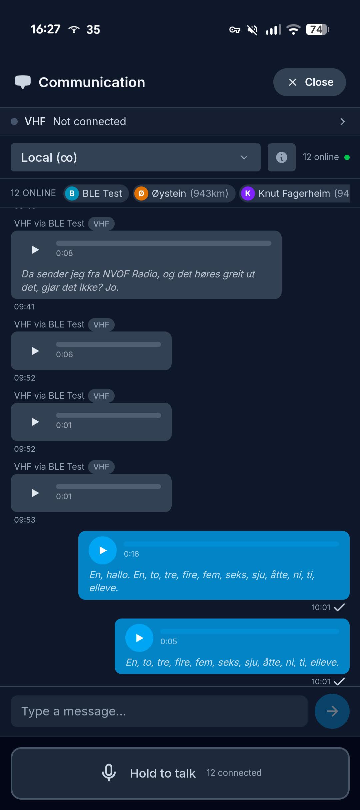
Get the app
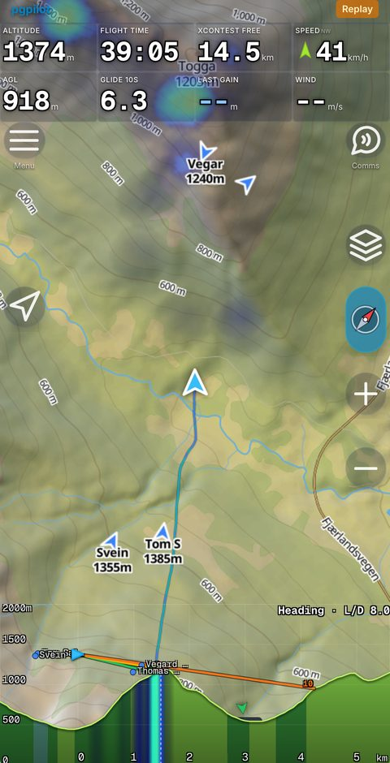


First time you open it
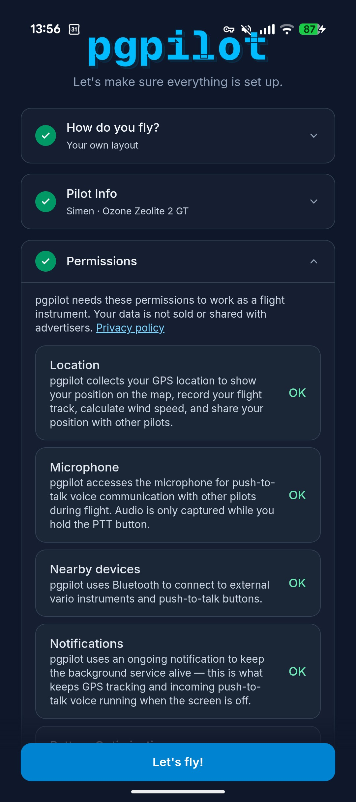
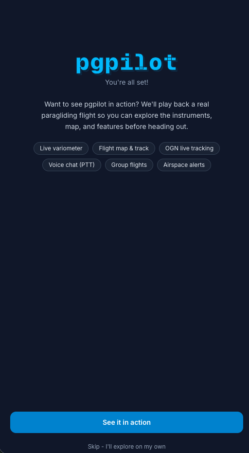
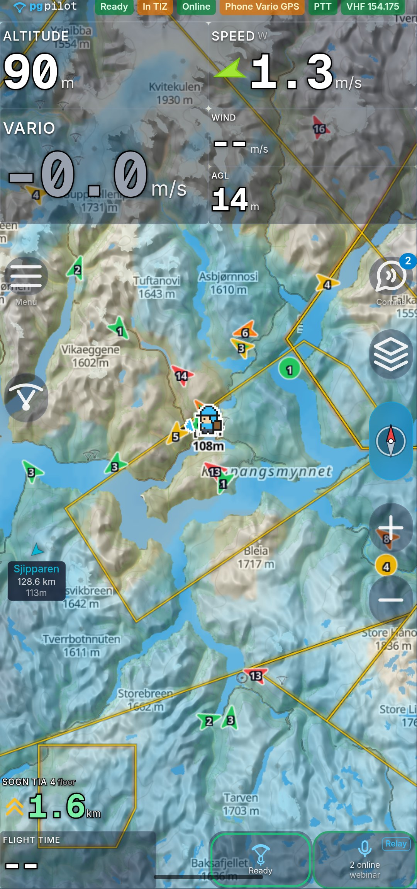
Join the group
pgpilot.app/join/webinar
Scan, type your name, done.
Part 2: The flight instrument
Part 2
The instrument
Thermals and vario
Plan a task
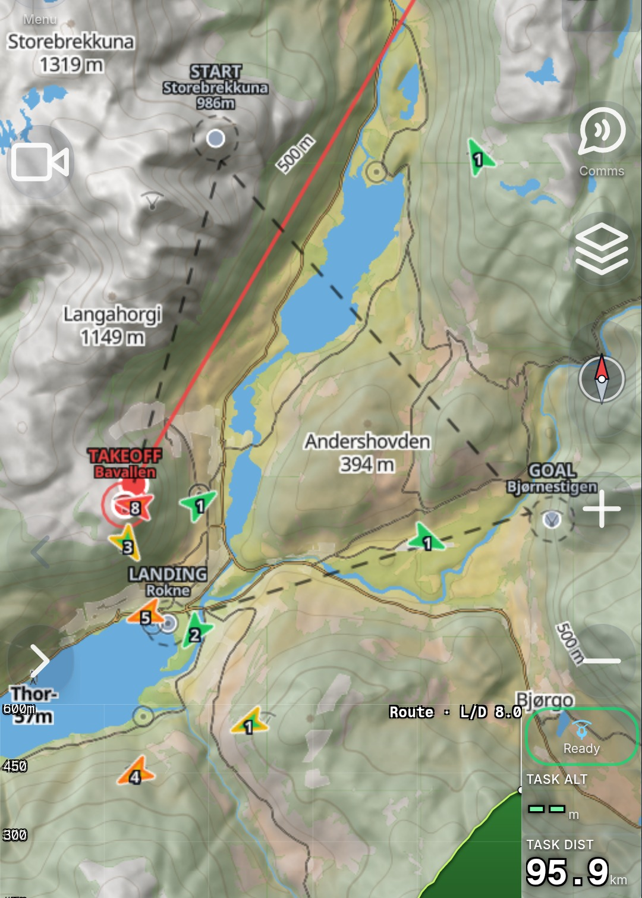
After the flight

Activity detection
- Detects flying, hiking, ground
- Mode under Menu, My status
- Automatic: hike and fly
- Auto takeoff and landing: flights only
- Wrong? Flight summary, Activity, Edit
- “It was all one flight”, or split at the playhead
- Tap a row to relabel, Undo to step back
AreaContest
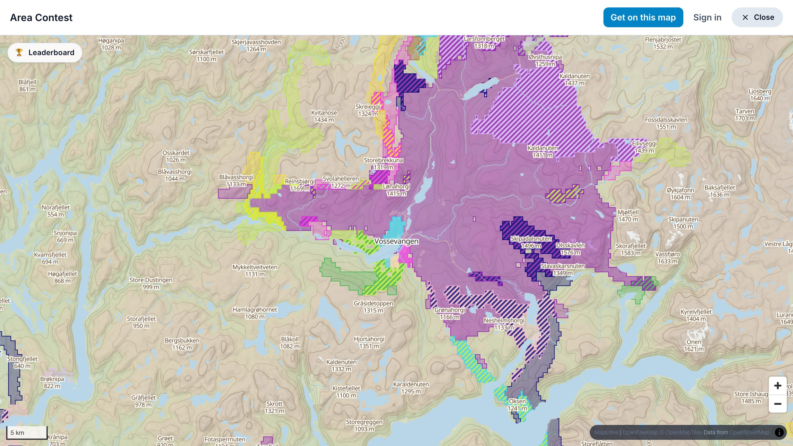
Part 3: Live wind
Part 3
Map over Voss
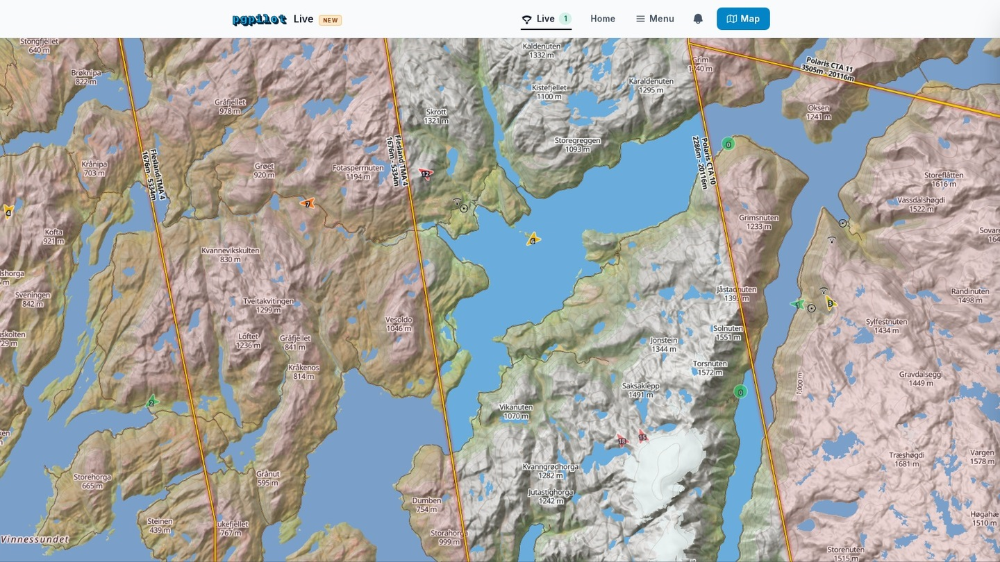
Tap Live wind
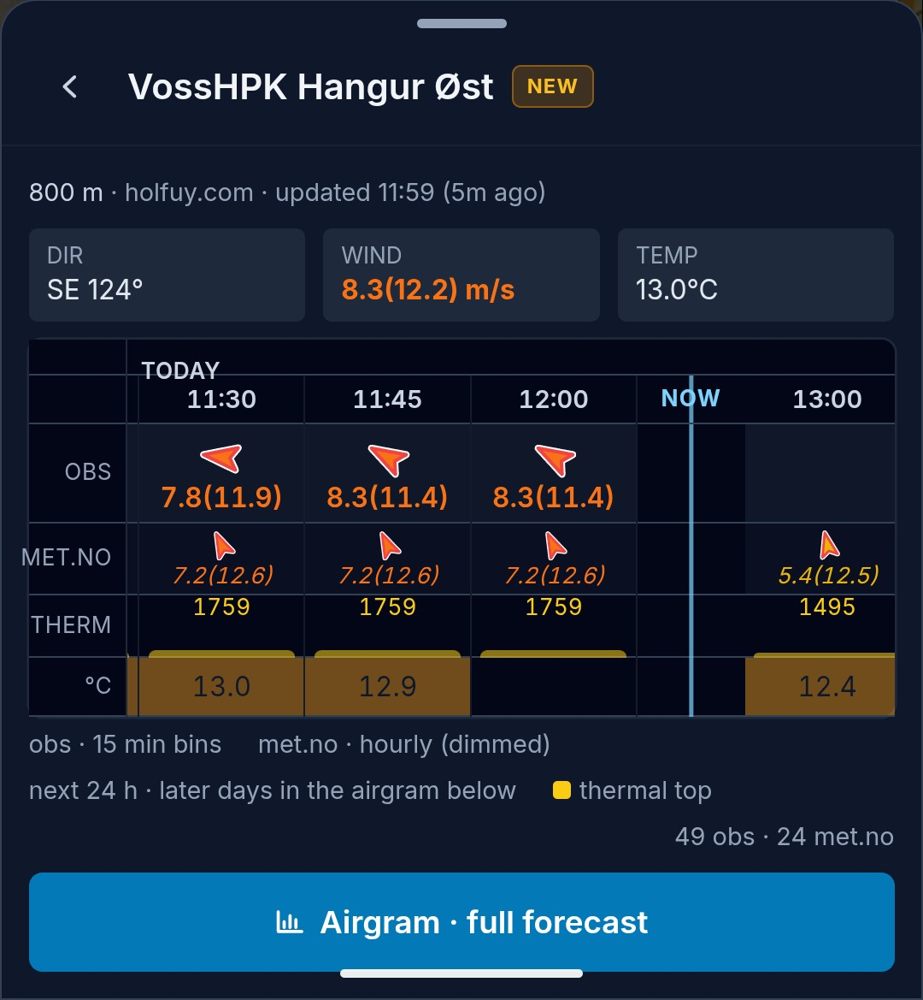
The airgram
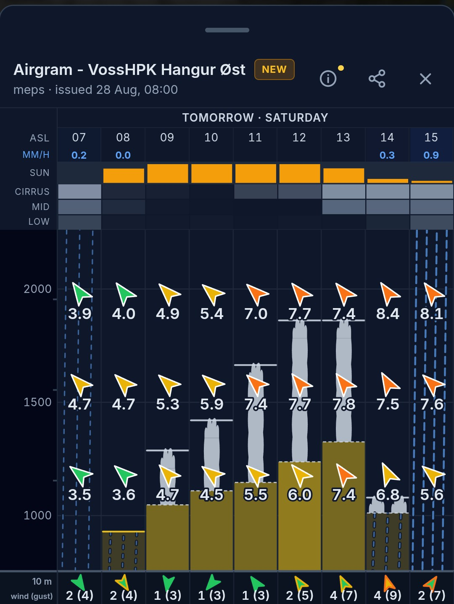
Part 4: Comms
Part 4
Talk together
The button on the riser
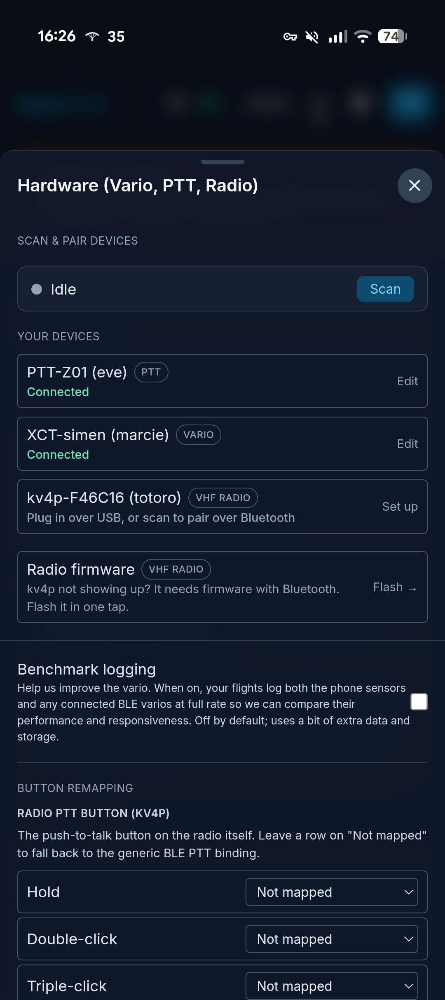
- Hold to talk
- Double-click to zoom in
- Triple-click to zoom out
- Tap and hold for the agent
The KV4P radio
- Transmits on VHF and the pgpilot channel at the same time
- Repeater: turn on "Relay the group out over the radio"
- Dedup: tries to play each transmission once
- Bluetooth, v2.0
Part 5: Hardware
Part 5
Connect your vario
Which varios work
| Manufacturer | Models confirmed |
|---|---|
| XCTracer | XC-Tracer Maxx, Maxx II, Maxx III, Mini |
| Stodeus | UltraBip, BlueBip, MipBip+, MipTrack |
| SkyBean / SkyDrop | SkyDrop, SkyDrop2, SkyBean S0 |
| Syride | SYS’Nav XL, SYS’Evo 2, SYS’Alti 4, SYS’Solar, SYS’GPS 4 |
| BlueFlyVario | BlueFly (BLE and TTL-GPS) |
| Vector Vario | Vector Vario |
| Flymaster | GPS LS 2 |
| DIY | MatiasVario V2 and V3, Microchip RN4678 / RN4871 |
Connect the services
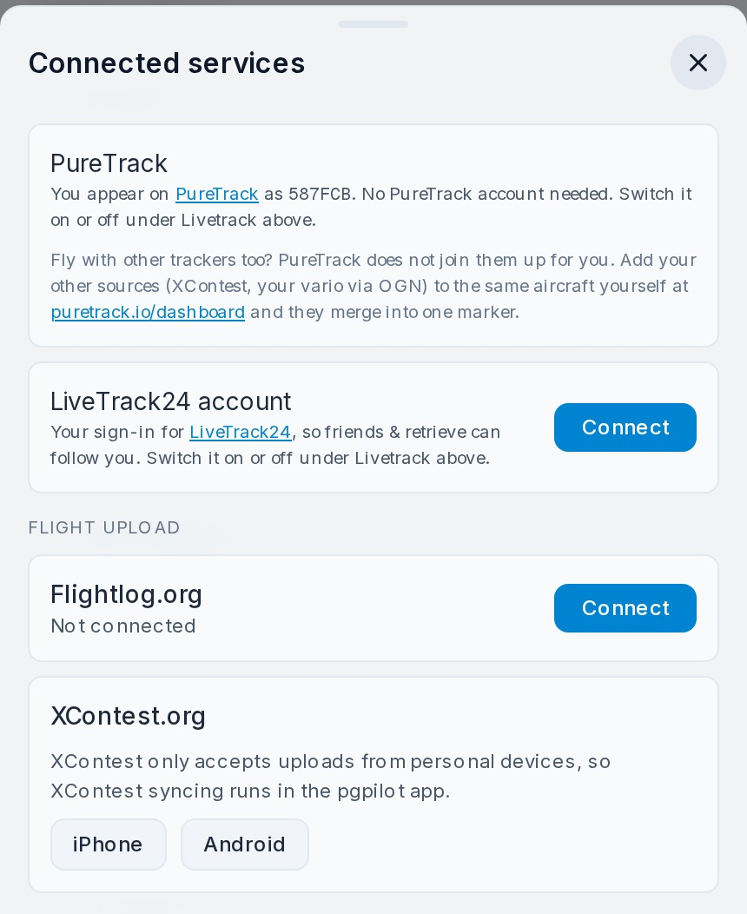
The kit
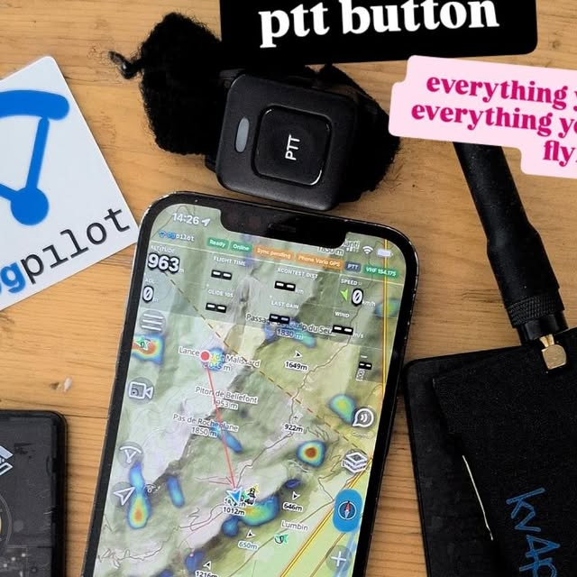
- Headphones. Shokz bone conduction: your ears stay open for flying, but you hear the phone.
- The button. Any GATT BLE button works. I fly with two.
- The radio. KV4P, from part 4.
Part 6: The Bir pack aka off grid
Part 6
Three radios, three jobs
VHF
Voice, when nothing else works. The KV4P radio from part 4.
LoRa
Position and short text with no infrastructure. FANET and Meshtastic.
Satellite
When there's no coverage at all. InReach.
FANET and FLARM
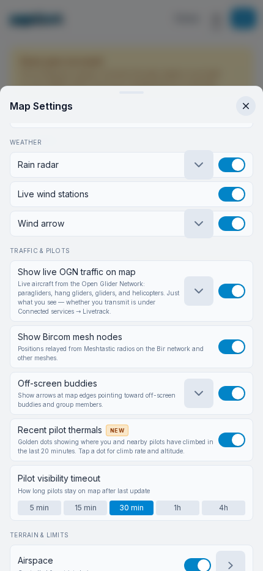
- Position every second
- Landed and distress status
- Short text
- Local weather stations
Meshtastic and Bircom
- Its own mesh, with no ground stations
- Channels as their own rows in Comms
- Works with no cell signal
InReach
Garmin InReach MapShare
Under Connected services you enter your MapShare name, the part after share.garmin.com/, once.
Inbound, not outbound
The app polls the MapShare feed and pulls your satellite position into pgpilot as its own source. It is not a channel we transmit to, and not Bluetooth messages or SOS.
For the others
Your position lands on everyone else's map even where there's no cell coverage at all, and someone at home can follow the dot.
Which LoRa board
SenseCAP T1000-E
Credit-card size, waterproof, GPS and battery built in. The one I'd pick, simply because it disappears in a harness pocket.
LILYGO T-Echo
Bigger, with an e-paper screen, a larger battery and an external antenna. Which is why the Bir community made it their standard. Pick this if range and battery matter more than size.
Your questions
From the sign-up form
Flying with others
- Others don’t need to switch
- OGN/FLARM, XContest, PureTrack, LiveTrack24, InReach show up
- SafeSky: turn on OGN / FLARM in Connected services
- Zello: no import, make the group in pgpilot
- Students: instructor talks to all over PTT, sees everyone
Seeing it in the air
- Too dark: Settings, Layout, light mode
- Or a pale map style in Map settings
- Screen setup: pick your fields in Layout
- Airspace above you: “Distance to airspace” field
- Nearest airspace, its floor, distance
Your flight log
- Three short trips: Edit, “It was all one flight”
- Avg speed vs Flightlog: measured over different spans
- 3D replay of any flight
What’s coming
- Regional forecast
- The airmass model: wind and thermals in one go
- Weather forecast
- KK7 thermal maps
- Live wind
- Other pilots
- You
- Drive detection, in test
Thanks for today